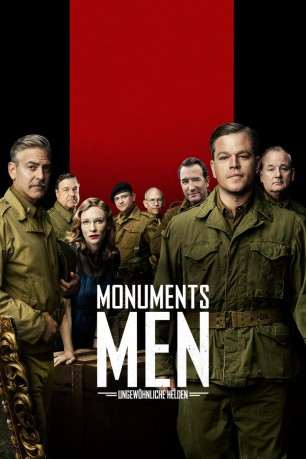
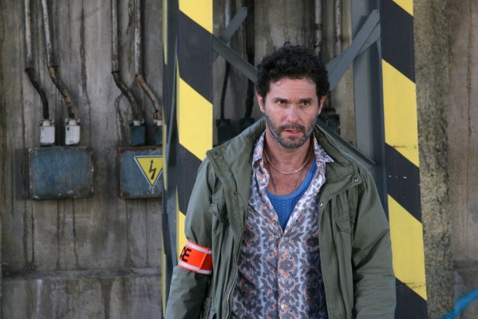

#2231 Monuments Men - Ungewöhnliche Helden
Alternativ: The Monuments Men
 
 IMDB-Wertung: 6.1 / 10
IMDB-Wertung: 6.1 / 10  Metascore: 52
Metascore: 52 
Als der Zweite Weltkrieg sich dem Ende zuneigt und Nazideutschland an allen Fronten immer weiter zurückgedrängt wird, erlässt Hitler den Befehl, dass keine Kunstwerke für den Feind zurückgelassen werden sollen. Alles, was nicht mitzunehmen ist, soll vernichtet werden. Genau diese Zerstörung wertvoller, historischer Kunstwerke zu verhindern ist die Aufgabe des ungewöhnlichen amerikanischen Platoons um Anführer George Stout. Zusammen mit seinem Freund James Rorimer und fünf weiteren Kunstexperten begibt sich Stout direkt an die Westfront, um den Schaden, soweit dies möglich ist, einzudämmen. Doch seitens der Armee wird der Spezialeinheit hauptsächlich Unverständnis entgegen gebracht und die Männer, die mit dem Pinsel besser umgehen können als mit dem Gewehr, müssen sich ihren Respekt hart erkämpfen...
Jahr: 2014
Dauer: 118 Minuten
FSK: 12
Land: USA Studio: Columbia PicturesTonspuren: DTS - ,
Untertitel: Deutsch, Englisch,
Auflösung: 1080p (1920x800) Größe: 6062 MB
Genre: Drama, Krieg
Regisseur:  George Clooney
George Clooney
Drehbuch: George Clooney, Grant Heslov, Robert M. Edsel, Bret Witter
Soundtrack: Alexandre Desplat
Darsteller:
 George Clooney als Frank Stokes
George Clooney als Frank Stokes Matt Damon als James Granger
Matt Damon als James Granger Bill Murray als Richard Campbell
Bill Murray als Richard Campbell Cate Blanchett als Claire Simone
Cate Blanchett als Claire Simone John Goodman als Walter Garfield
John Goodman als Walter Garfield Jean Dujardin als Jean Claude Clermont
Jean Dujardin als Jean Claude Clermont Hugh Bonneville als Donald Jeffries
Hugh Bonneville als Donald Jeffries Bob Balaban als Preston Savitz
Bob Balaban als Preston Savitz- Dimitri Leonidas als Sam Epstein
 Zachary Baharov als Commander Elya
Zachary Baharov als Commander Elya Sam Hazeldine als Colonel Langton
Sam Hazeldine als Colonel Langton Miles Jupp als Major Feilding
Miles Jupp als Major Feilding- Alexandre Desplat als Emile
 Diarmaid Murtagh als Captain Harpen
Diarmaid Murtagh als Captain Harpen-  Serge Hazanavicius als Rene Armand
- Aurélia Poirier als Young French Girl
 Grant Heslov als Doctor
Grant Heslov als Doctor- Matthew Maguire als Young Dying Soldier
- Christian Rodska als President Truman
- Oliver Devoti als Colonel at Caen
- James Payton als Hitler
- Lucas Tavernier als St. Bavo Priest
- Corin Stuart als Brit GI Translator
 Matt Rippy als Colonel Gregg
Matt Rippy als Colonel Gregg John Dagleish als ADSEC Sarge
John Dagleish als ADSEC Sarge Andrew Byron als Supply Sergeant
Andrew Byron als Supply Sergeant- Xavier Laurent als French Armed Man
- Nick Clooney als Older Stokes
 Joel Basman als German Soldier at Ghent
Joel Basman als German Soldier at Ghent- Andrew Alexander als Major Piper
 Adrian Bouchet als Sarge Near Altaussee
Adrian Bouchet als Sarge Near Altaussee- Joe Reynolds als Stokes' Son
- Audrey Marnay als Jean Claude's Wife
- James Audrey Jones als Campbell's Granddaughters
- Marc Rolfe als US Solider
- Nic Bernasconi als British Soldier , uncredited
 Paul Biddiss als Core US Infantry Sgt , uncredited
Paul Biddiss als Core US Infantry Sgt , uncredited Max Cavenham als Snr. Flight Engineer / US Marine , uncredited
Max Cavenham als Snr. Flight Engineer / US Marine , uncredited- Colin Coombs als American Corporal in Trench , uncredited
- Richard Cullen als SS Soldier , uncredited
 Graham Curry als US Soldier , uncredited
Graham Curry als US Soldier , uncredited Nick Donald als US Soldier Listening to Radio , uncredited
Nick Donald als US Soldier Listening to Radio , uncredited Kevin Fyfe als US Sgt in Ambush , uncredited
Kevin Fyfe als US Sgt in Ambush , uncredited- Adam Gary als US Soldier , uncredited
 Roman Green als American GI Amputee Casualty , uncredited
Roman Green als American GI Amputee Casualty , uncredited- Matt Harris als British Solder A Company , uncredited
 Jorge Leon Martinez als British Soldier , uncredited
Jorge Leon Martinez als British Soldier , uncredited- Jo Marriott als Pub Woman , uncredited
- Morris Minelli als British Soldier at the Camp , uncredited
 Matthew John Morley als British Soldier , uncredited
Matthew John Morley als British Soldier , uncredited
Datei: X:\2014(G-M)\Monuments Men - Ungewöhnliche Helden (2014, FSK12, 1920x800).mkv seit 22.10.2015
Festplatte: HD 2013(I-Z)-2014(A-Z)
 Es gibt insgesamt 136 Filme in der Gruppe '2014(G-M)'
Es gibt insgesamt 136 Filme in der Gruppe '2014(G-M)'